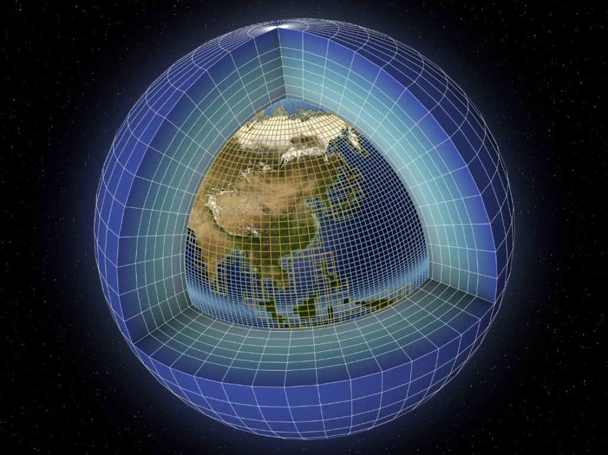

ACCUEIL
FONCTIONNEMENT
EXEMPLE
CONCLUSION
QUESTION
Les modèles climatiques et les prévisions du climat futur

Qu’est ce qu’un modèle climatique? Un modèle climatique est un programme informatique qui va simuler les différentes composantes du système climatique tels que l'atmosphère, l'océan…